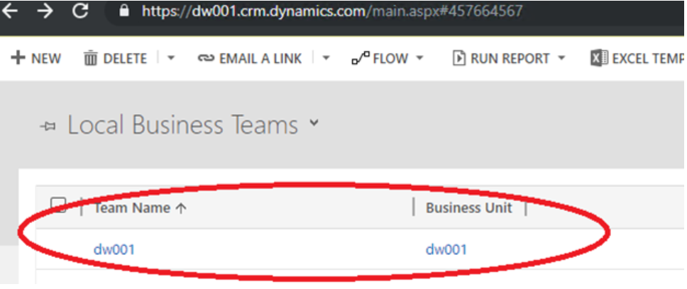
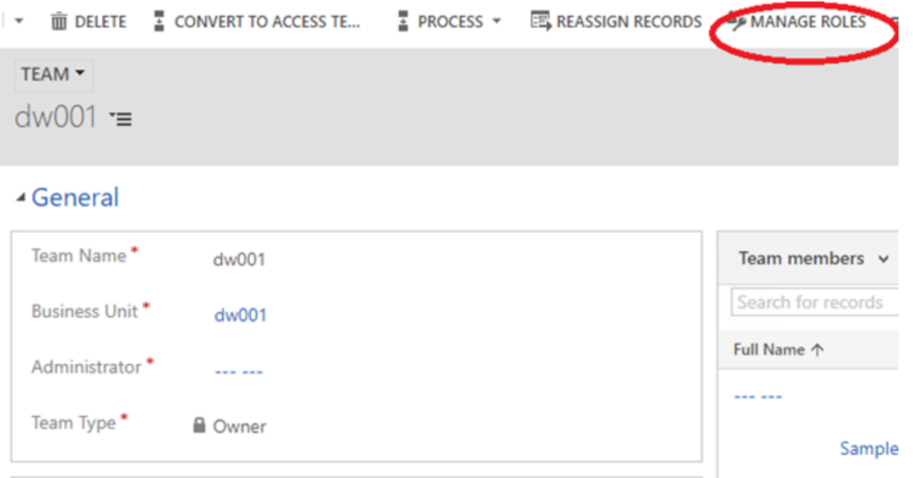

Live-Synchronisierungsprobleme behandeln
[!include[banner](../../includes/banner.md)][!include[rename-banner](~/includes/cc-data-platform-banner.md)]Dieses Thema enthält Problembehandlungsinformationen zur dualen Schreibintegration zwischen den Apps Finance and Operations und Dataverse. Dieses Thema enthält speziell Informationen zur Fehlerbehebung, mit denen Sie Probleme beheben können, die mit der Live-Synchronisierung zusammenhängen.
Important
Einige der in diesem Thema behandelten Probleme erfordern möglicherweise entweder die Systemadministratorrolle oder Microsoft Azure Active Directory (Azure AD) Anmeldeinformationen des Mandantenadministrators. Im Abschnitt zu jedem Problem wird erläutert, ob eine bestimmte Rolle oder Anmeldeinformationen erforderlich sind.
Bei der Live-Synchronisierung wird ein 403 Forbidden-Fehler ausgegeben, wenn Sie eine Zeile in einer Finance and Operations-App erstelllen.
Möglicherweise wird die folgende Fehlermeldung angezeigt, wenn Sie eine Zeile in einer Finance and Operations-App erstellen:
[{\„Fehler\“:{\„Code\“:\„0x80072560\“,\„Botschaft\“:\„Der Benutzer ist kein Mitglied der Organisation.\“}}], Der Remote-Server hat einen Fehler zurückgegeben: (403) Verboten. „}}“.
Befolgen Sie die Schritte, um das Problem zu beheben unter Systemanforderungen und -voraussetzungen (This is an external link). Um diese Schritte auszuführen, müssen die Benutzer der Dual-Write-Anwendung, die in Dataverse erstellt wurde, die Systemadministratorrolle haben. Das Standard-Besitzerteam muss auch die Systemadministratorrolle haben.
Bei der Live-Synchronisierung für eine Entität wird immer der gleiche Fehler ausgegeben, wenn Sie eine Zeile in einer Finance and Operations-App erstelllen.
Erforderliche Rolle zum Beheben der Fehler: System Administrator
Möglicherweise erhalten Sie jedes Mal eine Fehlermeldung wie die folgende, wenn Sie versuchen, Entitätsdaten in einer Finance and Operations App zu speichern:
Die Änderungen können nicht in der Datenbank gespeichert werden. Arbeitseinheit kann keine Transaktion festschreiben. Daten können nicht in Entitäts-Uoms geschrieben werden. Das Schreiben in UnitOfMeasureEntity ist mit der Fehlermeldung fehlgeschlagen. Synchronisierung mit Entitäts-Uoms nicht möglich.
Um das Problem zu beheben, müssen Sie sicherstellen, dass die erforderlichen Referenzdaten in beiden Finance and Operations App und Dataverse vorhanden sind. Zum Beispiel, wenn der Kunde, wenn Sie sich in der Finance and Operations App befinden, zu einer bestimmten Kundengruppe gehört, stellen Sie sicher, dass die Kundengruppe in Dataverse vorhanden ist.
Wenn auf beiden Seiten Daten vorhanden sind und Sie bestätigt haben, dass das Problem nicht datenbezogen ist, führen Sie die folgenden Schritte aus.
Stoppen Sie die zugehörige Entität.
Melden Sie sich bei der Finance and Operations-App an. Stellen Sie sicher, dass Zeilen für die fehlerhafte Entität in den Tabellen DualWriteProjectConfiguration und DualWriteProjectFieldConfiguration vorhanden sind. Beispielsweise sieht die Abfrage so aus, wenn die Kundenentität fehlschlägt.
Select projectname, externalenvironmentURL ,\* from DUALWRITEPROJECTCONFIGURATION where INTERNALENTITYNAME = 'Customers V3' and EXTERNALENTITYNAME = 'accounts'Wenn es Zeilen für die fehlerhafte Entität gibt, auch nachdem Sie die Tabellenzuordnung gestoppt haben, löschen Sie die Zeilen, die sich auf die fehlerhafte Entität beziehen. Notieren Sie sich die Spalte projectname in der Tabelle DualWriteProjectConfiguration und rufen Sie den Datensatz in der Tabelle DualWriteProjectFieldConfiguration ab, indem Sie die Zeile mithilfe des Projektnamens löschen.
Starten Sie die Tabellenzuordnung. Überprüfen Sie, ob die Daten ohne Probleme synchronisiert werden.
Behandeln Sie Lese- oder Schreibberechtigungsfehler, wenn Sie Daten in einer Finance and Operations App erstellen
Möglicherweise wird eine Fehlermeldung Bad Request angezeigt, die dem folgenden Beispiel ähnelt, wenn Sie Daten in einer Finance and Operations App erstellen.

Um das Problem zu beheben, müssen Sie dem Team der zugeordneten Geschäftseinheit Dynamics 365 Sales oder Dynamics 365 Customer Service die richtige Sicherheitsrolle zuweisen, um die fehlenden Berechtigungen zu aktivieren.
In der Finance and Operations App finden Sie den Geschäftsbereich, der im Verbindungssatz Datenintegration zugeordnet ist.

Melden Sie sich in der modellgesteuerten App in Dynamics 365 bei der Umgebung an und navigieren Sie zu Einstellungen > Sicherheit und finden Sie das Team der zugeordneten Geschäftseinheit.

Öffnen Sie die Seite für das Team zur Bearbeitung und wählen Sie dann Rollen verwalten, um das Dialogfeld Teamrollen verwalten zu öffnen.

Weisen Sie die Rolle zu, die über die Lese-/Schreibberechtigung für die relevanten Tabellen verfügt, und wählen Sie dann OK aus.
Beheben Sie Synchronisierungsprobleme in einer Umgebung, die eine kürzlich geändert Dataverse Umgebung hat
Erforderliche Rolle zum Beheben der Fehler: System Administrator
Möglicherweise wird die folgende Fehlermeldung angezeigt, wenn Sie Daten in einer Finance and Operations App erstellen:
{„entityName“:„CustCustomerV3Entity“,„executeStatus“:2,„fieldResponses“:[],„recordResponses“:[{„Fehlermeldung“:„Nutzdaten für die Entität CustCustomerV3Entity können nicht generiert werden“,„logDateTime“:„2019-08-27T18:51:52.5843124Z“,„verboseError“:„Die Erstellung der Nutzdaten ist mit dem Fehler fehlgeschlagen. Ungültiger URI: URI ist leer.“}],„isErrorCountUpdated“: true}
So sieht der Fehler in der modellgesteuerten App in Dynamics 365 aus:
Ein unerwarteter Fehler ist im ISV-Code aufgetreten. (ErrorType = ClientError) Unerwartete Ausnahme vom Plug-In (Ausführen): Microsoft.Dynamics.Integrator.DualWriteRuntime.Plugins.PostCommitPlugin: Entitätskonto konnte nicht verarbeitet werden – (Ein Verbindungsversuch ist fehlgeschlagen, da die verbundene Partei nach a nicht ordnungsgemäß geantwortet hat Zeitraum oder Verbindungsaufbau fehlgeschlagen hat, da der verbundene Host nicht reagiert hat
Dieser Fehler tritt auf, wenn die Dataverse Umgebung fälschlicherweise zurückgesetzt wird, während Sie versuchen, Daten in der Finance and Operations App zu erstellen.
Führen Sie folgende Schritte aus, um das Problem zu beheben.
Melden Sie sich bei der virtuellen Maschine (VM) für Finance and Operations an, öffnen Sie SQL Server Management Studio (SSMS) und suchen Sie in der Tabelle DUALWRITEPROJECTCONFIGURATIONENTITY nach Zeilen, für die internalentityname gleich Kunden V3 und externalentityname gleich Konten ist. So sieht die Abfrage aus.
select projectname, externalenvironmentURL ,\* from DUALWRITEPROJECTCONFIGURATION where INTERNALENTITYNAME = 'Customers V3' and EXTERNALENTITYNAME = 'accounts'Verwenden Sie den Projektnamen aus den Ergebnissen der vorherigen Abfrage, um die folgende Abfrage auszuführen.
select \* from DUALWRITEPROJECTFIELDCONFIGURATION where projectname = <project name from previous query>Stellen Sie sicher, dass die externalenvironmentURL Spalte die richtige Dataverse oder App-URL hat. Löschen Sie doppelte Zeilen, die auf die falsche Dataverse-URL verweisen. Löschen Sie die entsprechenden Zeilen in den Tabellen DUALWRITEPROJECTFIELDCONFIGURATION und DUALWRITEPROJECTCONFIGURATION.
Stoppen Sie die Tabellenzuordnung und starten Sie sie neu.